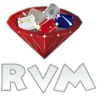

也紀念我們永遠的朋友 李士傑先生（Shih-Chieh Ilya Li）。
RVM - Ruby enVironment (Version) Manager
前言
相信很多人學習 Ruby 是因為 Ruby on Rails（以下簡稱 Rails）的緣故，但 Rails 改版的速度很快，除了主要版本經常大幅度更新外，小版號之間的變動也不小，例如 Rails 3.0.x 與 3.1.x 架構上差異頗大。Ruby 程式語言目前主流的有 1.8.x 跟 1.9.x 兩個分支，在功能上也都有些差異。
過去為了區分測試、開發環境，或檢查不同版本間的相容性，使用者需要使用不同的實體機器環境來操作；或是藉助虛擬化技術（如 VirtualBox）於相同的實體機器上模擬出不同的開發環境。無論是何種方式，都免不了安裝及管理上的麻煩。而本篇介紹的 RVM (Ruby enVironment/Version Manager) 就是針對此問題的解決方案。
RVM 提供在同一環境下安裝多個 Ruby 程式語言版本的機制，包括標準的 MRI（Matz's Ruby Interpreter）、REE（Ruby Enterprise Edition），甚至是 JRuby 與 MacRuby。使用者可於不同情況下進行環境切換。
RVM 的安裝環境預設於個人帳號資料夾中，設計上與系統環境有區隔，因此憑一般使用者權限安裝即可，不需要系統最高使用者的權限。每個 Ruby 環境的 Gem 都是分別管理，甚至在同一個 Ruby 下也可以建立不同的 Gemset，彼此獨立互不影響。
安裝
以下提到的各項安裝指令均以 Ubuntu 作業系統為例。
安裝 RVM 前，系統環境需要 curl 與 git。可於命令列模式中使用下列指令進行安裝：：
$ sudo apt-get install curl git
接著在命令列模式中輸入下列指令：
$ bash < <(curl -s https://raw.github.com/wayneeseguin/rvm/master/binscripts/rvm-installer)
輸入完成將會開始下載 RVM 並自動進行安裝及設定。
安裝完成後，再依據系統提供的 Shell 進行設定。如果是 Bash Shell，可以在命令列模式下輸入下列指令：
$ echo '[[ -s "$HOME/.rvm/scripts/rvm" ]] && . "$HOME/.rvm/scripts/rvm"' >> ~/.bash_profile
更詳細的安裝說明可以參考官方網站的安裝說明。
使用範例
01. 列出支援的版本列表
請於命令列模式下輸入下列指令：
$ rvm list known
輸出範例為：
# MRI Rubies
[ruby-]1.8.6[-p420]
[ruby-]1.8.6-head
[ruby-]1.8.7[-p352]
[ruby-]1.8.7-head
[ruby-]1.9.1-p378
[ruby-]1.9.1[-p431]
[ruby-]1.9.1-head
[ruby-]1.9.2-p180
[ruby-]1.9.2[-p290]
[ruby-]1.9.2-head
[ruby-]1.9.3-preview1
[ruby-]1.9.3[-rc1]
[ruby-]1.9.3-head
ruby-head
# GoRuby
goruby
# JRuby
jruby-1.2.0
jruby-1.3.1
jruby-1.4.0
jruby-1.6.1
jruby-1.6.2
jruby-1.6.3
jruby[-1.6.4]
jruby-head
# Rubinius
rbx-1.0.1
rbx-1.1.1
rbx-1.2.3
rbx-1.2.4
rbx[-head]
rbx-2.0.0pre
# Ruby Enterprise Edition
ree-1.8.6
ree[-1.8.7][-2011.03]
ree-1.8.6-head
ree-1.8.7-head
# Kiji
kiji
# MagLev
maglev[-26852]
maglev-head
# Mac OS X Snow Leopard Only
macruby[-0.10]
macruby-nightly
macruby-head
# IronRuby -- Not implemented yet.
ironruby-0.9.3
ironruby-1.0-rc2
ironruby-head
從列表中可以發現 RVM 支援所有常見的 Ruby Interpreter。
02. 安裝指定的版本
列出的支援版本中，中括弧的部分是可以省略的，例如使用 RVM 安裝 ruby 1.8.7，可於命令列模式下輸入下列指令：
$ rvm install 1.8.7
此時 RVM 會自動符合 [ruby-]1.8.7[-p352]。
如果要再安裝不同的版本，例如 ruby 1.9.2，可於命令列模式下輸入下列指令：
$ rvm install 1.9.2
03. 列出目前安裝的版本
請於命令列模式下輸入下列指令：
$ rvm list
輸出範例為：
rvm rubies
ruby-1.9.2-p290 [ i686 ]
ruby-1.8.7-p352 [ i686 ]
顯示目前 RVM 環境中安裝了 2 個版本的 Ruby，分別為 1.8.7 跟 1.9.2。
04. 切換至指定的版本
切換前，可以使用下列指令檢查目前環境中使用的版本：
$ ruby -v
ruby 1.8.7 (2010-06-23 patchlevel 299) [i686-linux]
輸出範例的結果顯示為 ruby-1.8.7-p299。
接著使用下列指令切換至指定的版本，如 ruby 1.9.2：
$ rvm use 1.9.2
Using /home/eddie/.rvm/gems/ruby-1.9.2-p290
指令裡的 "use" 可以省略，如：
$ rvm 1.9.2
Using /home/eddie/.rvm/gems/ruby-1.9.2-p290
再檢查目前的 Ruby 版本：
$ ruby -v
ruby 1.9.2p290 (2011-07-09 revision 32553) [i686-linux]
此時環境已切換至 Ruby 1.9.2。
不過此環境設定僅於目前的命令列模式下發生作用，當開啟新的命令列模式時，Ruby 還是會回到原先預設的版本。如果希望每次開啟命令列模式都會切換到指定的版本，則使用下列指令：
$ rvm 1.9.2 --default
如果想切換回原本系統內建的版本，則使用下列指令：
$ rvm system
05. 移除指定版本
如果想要移除 ruby 1.9.2，請於命令列模式下輸入下列指令：
$ rvm remove 1.9.2
06. 移除 RVM
只要把個人帳號資料夾下的 "rvm" 整個移除，再將先前設定的 Shell 相關設定修改回來即可。
RVM 的運作原理
RVM 透過操作環境變數來切換版本，例如在 Ubuntu 中使用了 Shell 中的 PATH 變數。
首先，可以使用下列指令查看目前 PATH 變數的值：
$ echo $PATH
/usr/local/sbin:/usr/local/bin:/usr/sbin:/usr/bin:/sbin:/bin:/usr/games:/home/eddie/.gem/ruby/1.8/bin:/usr/local/lib/python2.6/dist-packages/django/bin:/home/eddie/.rvm/bin:/home/eddie/.rvm/bin
顯示目前環境使用的 ruby 程式位置：
$ which ruby
/usr/bin/ruby
顯示目前環境使用的 ruby 版本：
$ ruby -v
ruby 1.8.7 (2010-06-23 patchlevel 299) [i686-linux]
接著，藉由下列指令將 RVM 切換到 ruby 1.9.2：
$ rvm 1.9.2
Using /home/eddie/.rvm/gems/ruby-1.9.2-p290
此時顯示目前 PATH 變數的值：
$ echo $PATH
/home/eddie/.rvm/gems/ruby-1.9.2-p290/bin:/home/eddie/.rvm/gems/ruby-1.9.2-p290@global/bin:/home/eddie/.rvm/rubies/ruby-1.9.2-p290/bin:/home/eddie/.rvm/bin:/usr/local/sbin:/usr/local/bin:/usr/sbin:/usr/bin:/sbin:/bin:/usr/games:/home/eddie/.gem/ruby/1.8/bin:/usr/local/lib/python2.6/dist-packages/django/bin
再次顯示目前環境的 Ruby 程式位置：
$ which ruby
/home/eddie/.rvm/rubies/ruby-1.9.2-p290/bin/ruby
再次顯示目前環境的 Ruby 版本：
$ ruby -v
ruby 1.9.2p290 (2011-07-09 revision 32553) [i686-linux]
RVM 會於環境變數 PATH 的最前面安排指定版本的相關執行路徑。使得在命令列模式下執行 ruby 指令時，會因 PATH 排列的權重，優先取得「.rvm」下的指定版本，而非系統原本的 /usr/bin/ruby。
RVM 與 Gem
在 RVM 裡，不同版本的 Ruby 的 gem 各別獨立。
> gem list
*** LOCAL GEMS ***
bundler (1.0.0.rc.5)
json (1.6.1 ruby)
rake (0.9.2 ruby)
rdoc (3.10 ruby)
再來我們切換到 1.8.7安裝 Rails：
> rvm 1.8.7
> gem install rails
我們看看 gem 的安裝情形：
> gem list
*** LOCAL GEMS ***
actionmailer (3.1.1)
actionpack (3.1.1)
activemodel (3.1.1)
activerecord (3.1.1)
.. 略 ..
rails (3.1.1)
railties (3.1.1)
rake (0.9.2 ruby)
rdoc (3.10 ruby)
sprockets (2.0.2)
thor (0.14.6)
tilt (1.3.3)
treetop (1.4.10)
tzinfo (0.3.30)
安裝了最新版本的 Rails 3.1.1，這時候切回 Ruby 1.9.2 看到原來的 gem list 並未改變，表示 gem 是跟著不同版本的 Ruby 獨立安裝的。
要注意的是，我們在 RVM 安裝的任何 Ruby 版本都跟系統的 Ruby 無關，即使版本編號相同也是不同的 Ruby，gem 也不會安裝到系統的 Ruby 裡。
RVM 與 Gemset
Ruby/Rails 的世界進步很快，套件的版本一直更新，所以很常看到這種狀況：
> gem list
.. 略 ..
rails (3.1.1, 3.1.0, 3.0.9, 3.0.7)
.. 略 ..
同一個套件就裝了二、三個以上的版本，你可以選擇把不用的版本移除，不過我會建議你用不同的 gemset 來管理。例如我想在 Ruby 1.9.2 底下同時安裝 Rails 2.3.9 跟 3.1.1 版本。
先切換到 Ruby 1.9.2，建立一個預備安裝 Rails 2.3.9 的 gemset：
> rvm gemset create rails-2.3.9
'rails-2.3.9' gemset created (/home/eddie/.rvm/gems/ruby-1.9.2-p290@rails-2.3.9).
不一定要用 rails-2.3.9，gemset 可以自行命名。接著建立給 Rails 3.1.1 版的 gemset：
> rvm gemset create rails-3.1.1
'rails-3.1.1' gemset created (/home/eddie/.rvm/gems/ruby-1.9.2-p290@rails-3.1.1).
看一下目前已建立的 gemset：
> rvm gemset list
gemsets for ruby-1.9.2-p290 (found in /home/eddie/.rvm/gems/ruby-1.9.2-p290)
global
rails-2.3.9
rails-3.1.1
有 2 個剛剛建好的 gemset，而 global 是整個 Ruby 預設的 gemset，如果沒特別指定的話，gem 都是安裝到 global 裡。再來我們切換到 rails-2.3.9：
> rvm gemset use rails-2.3.9
安裝 Rails 2.3.9 版：
> gem install rails -v='2.3.9' --no-rdoc --no-ri
Fetching： activesupport-2.3.9.gem (100%)
Fetching： activerecord-2.3.9.gem (100%)
.. 略 ..
Successfully installed activeresource-2.3.9
Successfully installed rails-2.3.9
7 gems installed
完成後，再切換到 rails-3.1.1：
> rvm gemset use rails-3.1.1
接著重複同樣的步驟，只是版本編號改成 3.1.1。兩個 gemset 都裝好之後來看看結果：
> rvm gemset use rails-2.3.9
> rails -v
Rails 2.3.9
> rvm gemset use rails-3.1.1
> rails -v
Rails 3.1.1
如果要從其他版本的 Ruby 切換到指定的 gemset，則：
> rvm 1.9.2@rails-3.1.1
因此，可以依需求建立、切換 gemset，而且每個 gemset 都是獨立的。如果不需要了，也可以清除。例如想清除 rails-2.3.9 這個 gemset 的話：
> rvm gemset empty rails-2.3.9
WARN： Are you SURE you wish to remove the installed gems for gemset 'ruby-1.9.2-p290@global' (/home/eddie/.rvm/gems/ruby-1.9.2-p290@global)?
(anything other than 'yes' will cancel) > yes
清除只會把安裝的 gem 砍掉，gemset 的名字仍會保留；如果想把整個 gemset 刪掉：
> rvm gemset delete rails-2.3.9
WARN： Are you SURE you wish to remove the entire gemset directory 'rails-2.3.9' (/home/eddie/.rvm/gems/ruby-1.9.2-p290@rails-2.3.9)?
(anything other than 'yes' will cancel) > yes
各別專案設定
有時候我們會遇到專案 A 用 Ruby 1.8.7，專案 B 用 Ruby 1.9.2的情況，雖然 RVM 可以迅速切換，但若忘了換回來也會造成困擾。這時候可以在該專案的資料夾底下放一個 .rvmrc 檔案，只要簡單的一行設定：
rvm use 1.9.2@rails-3.1.1
如果後面沒特別指定的話，預設會使用 global 的 gemset。在你第一次進到該資料夾時會出現提示訊息：
> cd project1
==============================================================================
= NOTICE =
==============================================================================
= RVM has encountered a new or modified .rvmrc file in the current directory =
= This is a shell script and therefore may contain any shell commands. =
= =
= Examine the contents of this file carefully to be sure the contents are =
= safe before trusting it! ( Choose v[iew] below to view the contents ) =
==============================================================================
Do you wish to trust this .rvmrc file? (/tmp/project1/.rvmrc)
y[es], n[o], v[iew], c[ancel]> yes
Using /home/eddie/.rvm/gems/ruby-1.9.2-p290 with gemset rails-3.1.1
這樣當你下次再用 cd 指令進到該資料夾的時候，RVM 就會自動切換成你指定的 Ruby + gemset 版本。
可能會遇到的問題
安裝 RVM 時，有些 package 的安裝需要另外處理，像 OpenSSL 就是其中一例。就算用系統的 apt-get install 安裝，RVM 仍會出現 LoadError。需要用以下方式來安裝：
> rvm pkg install openssl
> rvm remove 1.9.2
> rvm install 1.9.2 --with-openssl-dir=$rvm_path/usr
除了 OpenSSL 之外，Readline 也有類似的狀況，使用 RVM 在 Ubuntu 上練習寫 Rails 的時候特別容易遇到，這點還請多留意。更多詳細內容可參考這裡。
結語
RVM 可以快速地在各個 Ruby 版本間切換，而且與系統原本的環境進行區隔，管理與操作上都不會影響到原本的系統設定。對於喜歡嚐鮮、試新玩具又怕破壞原系統的人來說，真是一大福音。
OSSF Newsletter : 第 185 期 程式語言版本管理系統
Tags: ruby, rvm, version manager, environment manager, multiple version, installation management,
Category: Tech Column
Special


Address：No.128, Sec.2, Academia Rd., Institute of Information Science, Academia Sinica, Nangang District, Taipei City 11529, Taiwan (R.O.C).
Privacy Policy. Terms-of-use